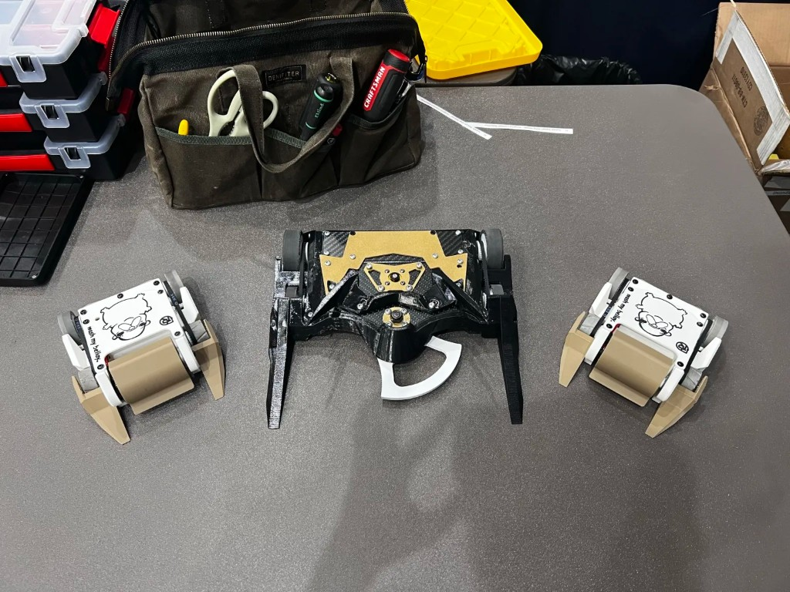
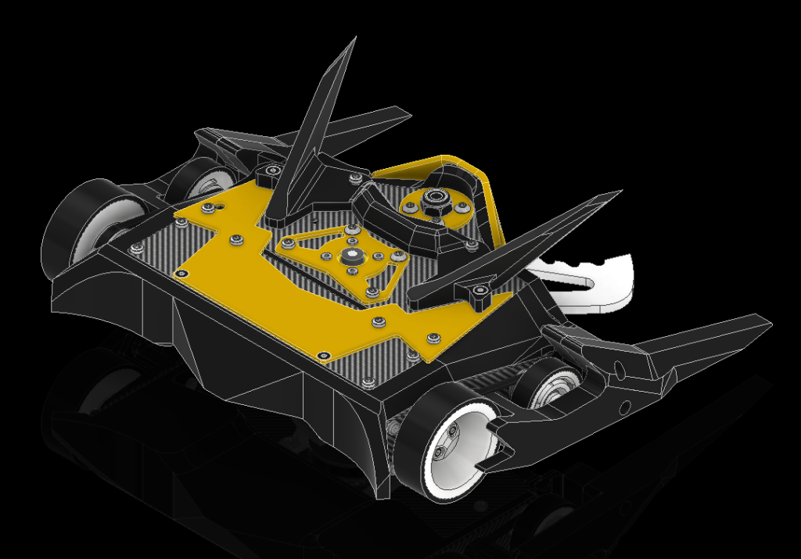
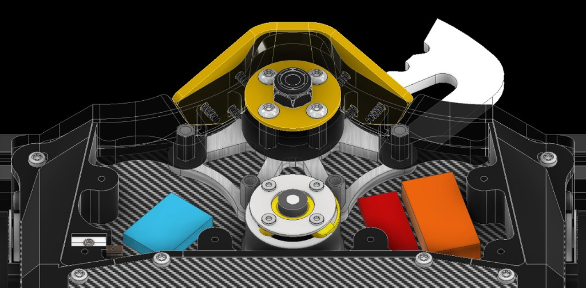
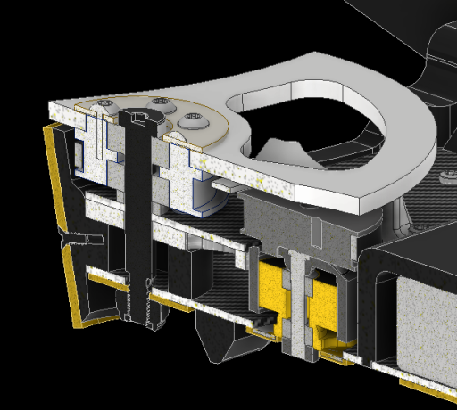
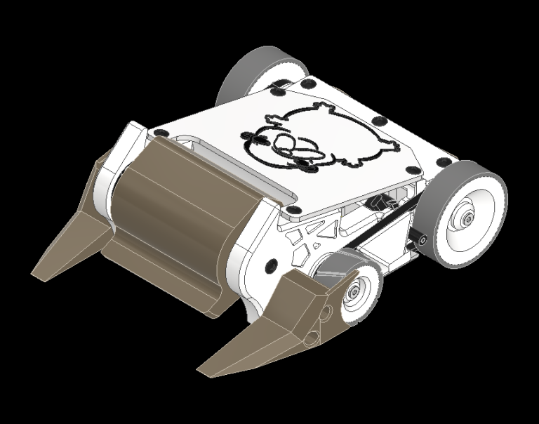
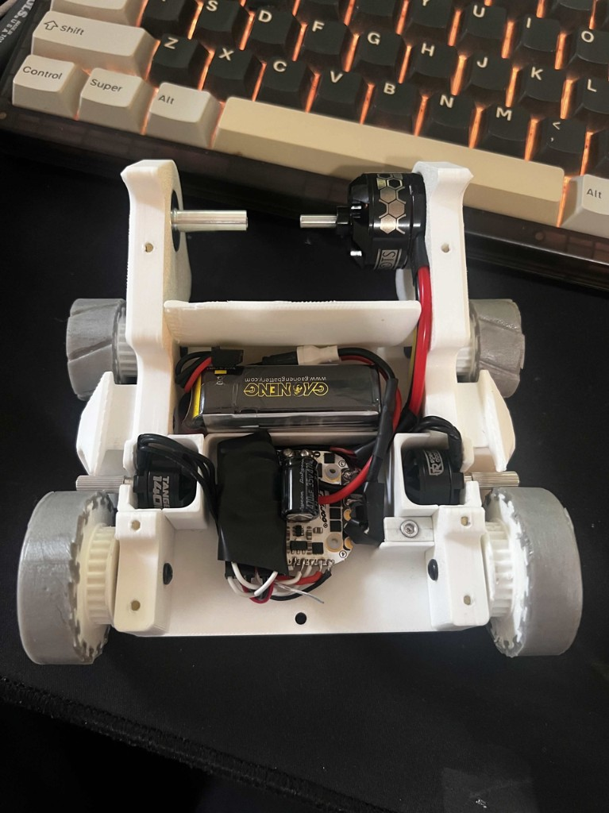
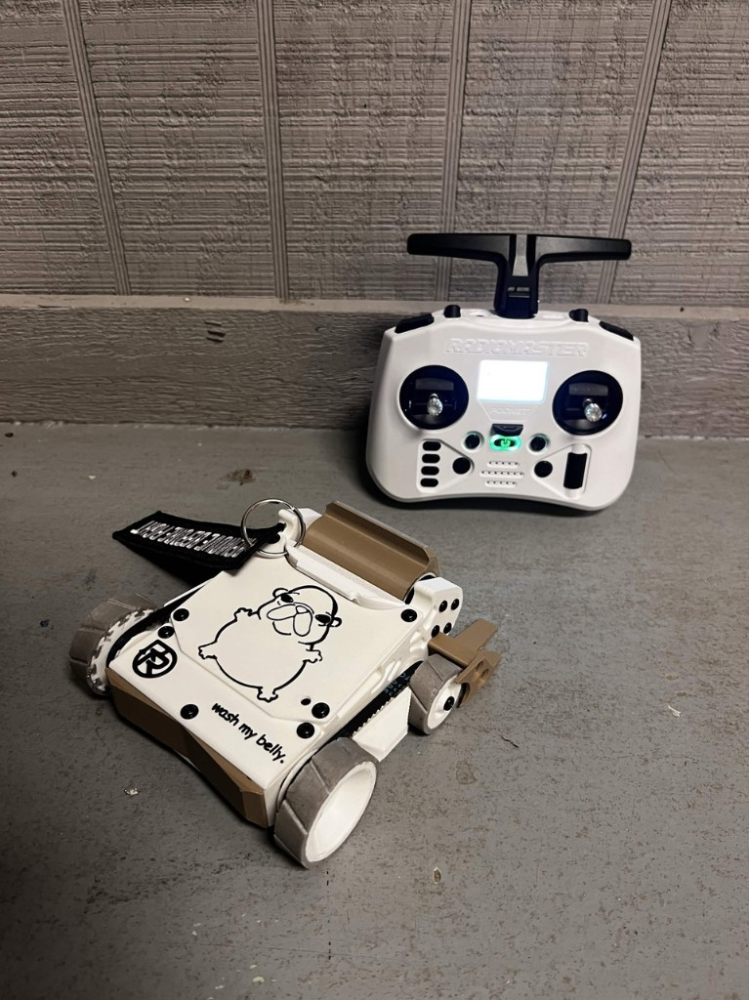

Combat Robots
Knights Combat Robotics Projects

3 lb Combat Robot
Engineered a 3 lb undercutter-style robot requiring extremely compact packaging, fitting the chassis, electronics, and general weapon structure all above an AR500 steel weapon blade plane. The robot utilized carbon fiber sheet, glass-filled nylon, aluminum, titanium plating, TPU, and AR500 steel, all to balance rigidity, shock resistance, thermal protection, and weight optimization.



1 lb Combat Robot
Designed a brushless 1lb vertical drum spinner robot using a 4-wheel belt drivetrain made within the tight weight constraint. Opted for this design choice to prioritize maneuverability and control over the traditional two-wheel-chassis designs. Engineered a custom drum geometry with a triangular tooth to focus tip speed while lowering mass.


